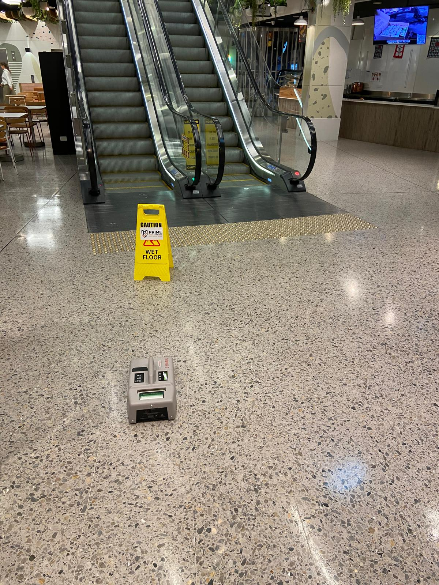

Multi-site surface testing
Coordinate wet, dry or combined testing across multiple facilities within an agreed scope.
Explore slip testing →Acknowledgement of CountryPrime Safety & Compliance Services Pty Ltd acknowledges the Traditional Custodians of the lands on which we live and work. We pay our respects to Aboriginal and Torres Strait Islander Elders past, present and emerging, and recognise their continuing connection to land, waters and community.
From single sites to multi-site portfolios, Prime Safety supports facilities, property and operations teams across Perth and Western Australia.

Prime Safety’s testing scope is built for existing pedestrian surfaces and workplace electrical equipment across a wide range of facilities.
Tell us how many facilities you manage and what needs to be assessed.